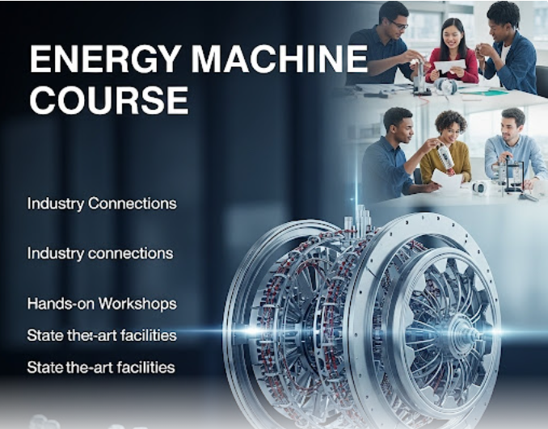
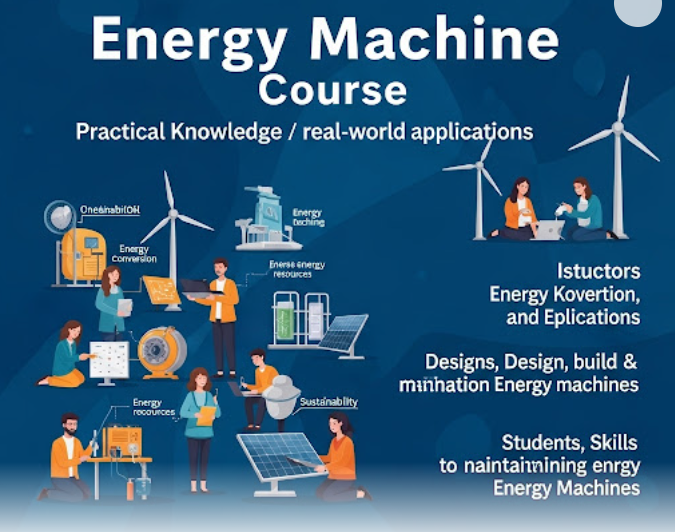

エネルギー機械コースとは？
エネルギー機械コースでは、持続可能な社会を支えるためのエネルギー技術と、それを実現する機械工学の知識・技術を深く学びます。未来の地球環境と産業をリードする技術者を育成することを目指しています。

私たちの生活に不可欠なエネルギーを効率よく利用し、環境負荷を低減する技術は、現代社会の最重要課題の一つです。本コースでは、熱機関、流体機械、再生可能エネルギーシステムなど、幅広い分野を横断的に学習します。
ここで何を学ぶのか
座学だけでなく、実験や実習を通じて実践的なスキルを身につけます。以下は学習内容の一部です。
- 熱力学・流体力学: エネルギー変換の基礎となる原理を学びます。
- 機械設計・材料力学: 効率的な機械を設計・製造するための知識を習得します。
- 再生可能エネルギー: 太陽光、風力、地熱などのクリーンエネルギー技術を探求します。
- 環境工学: 環境問題への機械工学からのアプローチを学びます。
- プログラミング・制御工学: 機械の自動化やデータ解析に必要な技術を習得します。

卒業後の進路
本コースで培った専門知識と実践力は、多岐にわたる分野で高く評価されます。
就職
- 電力・ガス会社
- 自動車・重工業メーカー
- プラントエンジニアリング企業
- 再生可能エネルギー関連企業
- 研究開発機関
進学
- 大阪公立大学への編入
- 他大学工学部への編入
- 大学院への進学
- 専攻科への進学
エネルギー機械コースを選ぶ理由
私たちのコースは、以下のような魅力があります。
- 実践的な学び: 最新の設備を用いた実験・実習が豊富です。
- 少人数教育: きめ細やかな指導で、個々の学生の成長をサポートします。
- 未来志向のカリキュラム: 環境問題やエネルギー問題といった、社会のニーズに応える技術を習得できます。
- 多様な進路: 就職・進学ともに幅広い選択肢があります。
関連情報・お問い合わせ
さらに詳しい情報はこちらをご覧ください。
ご質問がありましたら、お気軽にお問い合わせください。